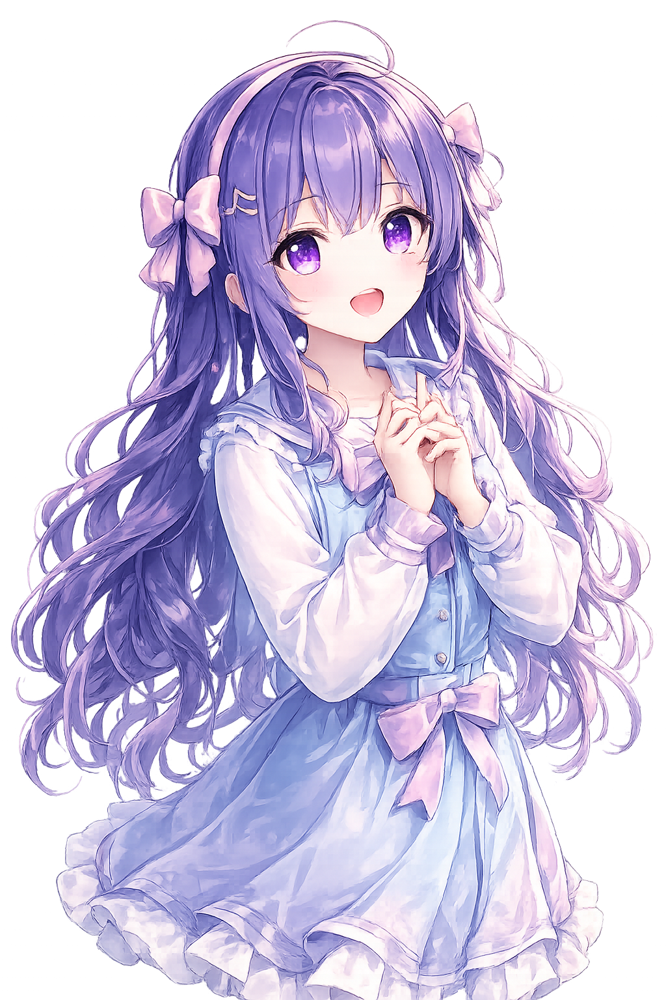

「好きな曲を歌ってみたい」「もっと上手に歌えるようになりたい」「歌ってみたに挑戦してみたい」
そんな気持ちを、安心して楽しめるようにサポートします。
歌を学ぶことを大切にしています
P.S.歌ってみた部は、ただ遊ぶだけのコミュニティではありません。
発声・リズム・音程・表現など、ボイストレーニングをベースに、楽しく歌の力を伸ばしていきます。
初心者の子も、人前で歌うのが苦手な子も大丈夫です。
こんな子におすすめ
- 歌うことが好き
- 推しみたいに歌ってみたい
- 高い声を出せるようになりたい
- 歌ってみたに興味がある
- 人前で歌うのが少し苦手
- 自分の声に自信を持ちたい

安心して参加できる場所づくり
P.S.歌ってみた部では、子どもたちが安心して楽しめるように、運営ルールを大切にしています。
- 悪口・仲間外れ禁止
- 個人情報の共有禁止
- 参加者同士の個別連絡禁止
- 無理な発表はなし
- 人見知りでも参加OK
「上手い・下手」ではなく、一人ひとりの“好き”と“成長”を大切にします。
レッスンでできること
発声練習
高音練習
リズム練習
推し曲・好きな曲の練習
歌ってみたの相談
録音や投稿に向けたアドバイス
MIX・作品づくりの学習
オリジナル曲制作サポート
歌を楽しみながら、少しずつ自信をつけていきます。
顔出しなしで、歌い手体験
P.S.歌ってみた部では、顔出しを必須にしていません。
イラストやアバター、2次元キャラクターなどを使いながら、プライバシーを守って活動することもできます。
投稿は希望者のみです。録音だけ体験したい、家族だけに聴いてもらいたい、という参加の仕方も大丈夫です。
保護者の方へ
P.S.歌ってみた部は、お子さまが安心して「好き」を表現できる場所を目指しています。
歌い手文化やSNSに興味があるお子さまにも、安全に楽しめるよう、講師・運営がしっかりサポートします。
- 入会には親子面談が必須です
- 親御さまの了承のもとで入会手続きを行います
- 芸能活動を目的とした団体ではありません
- 高額な機材購入は不要です
- 保護者見学も可能です
まずはお気軽に、体験レッスンからご相談ください。